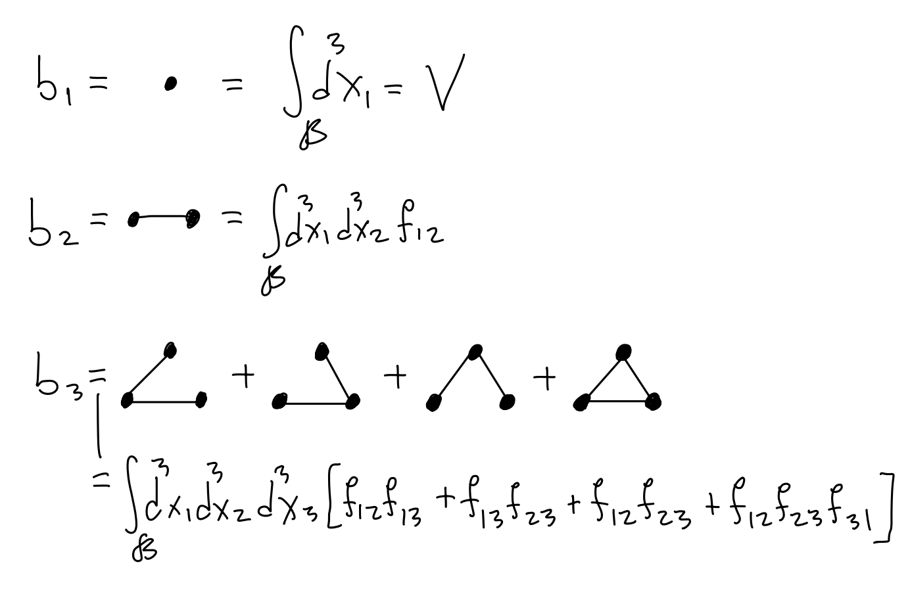
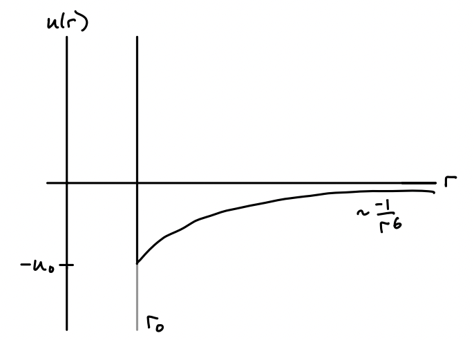
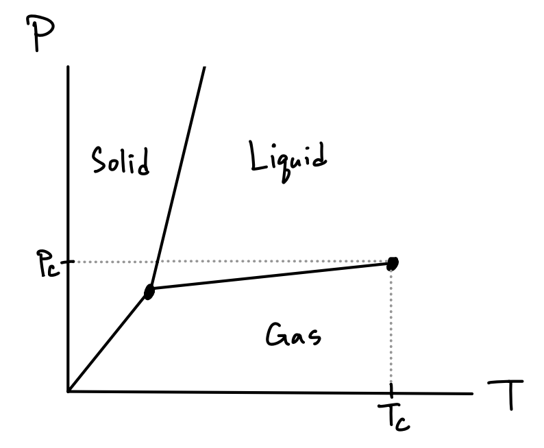
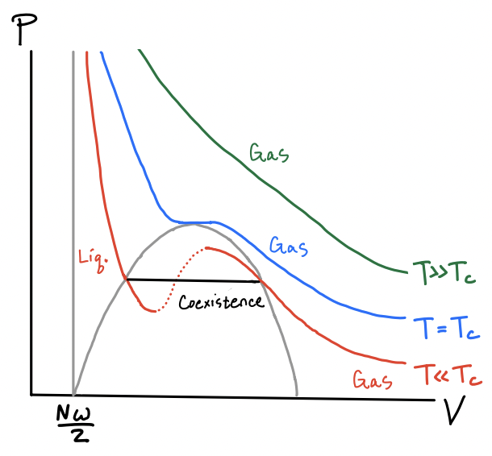
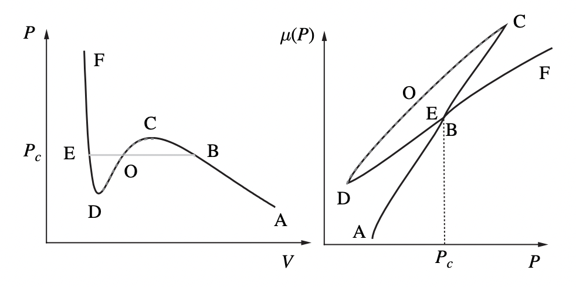
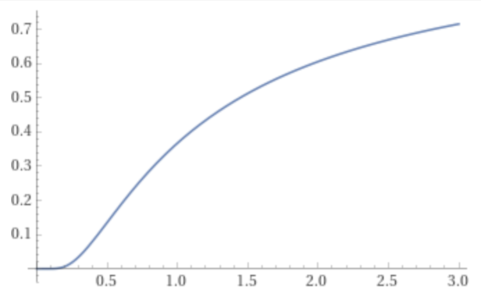
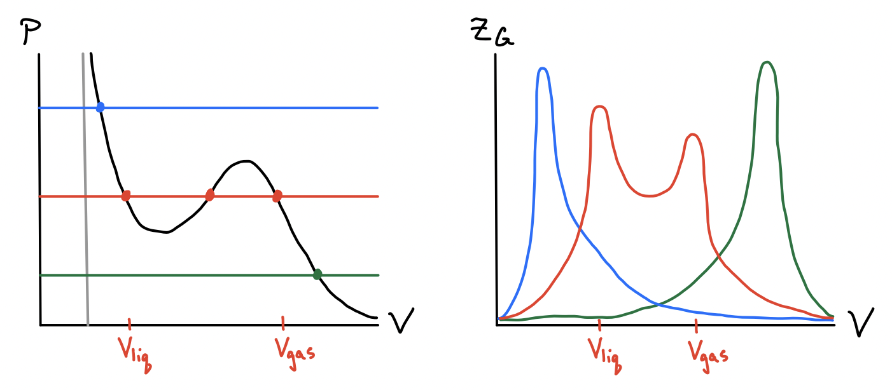
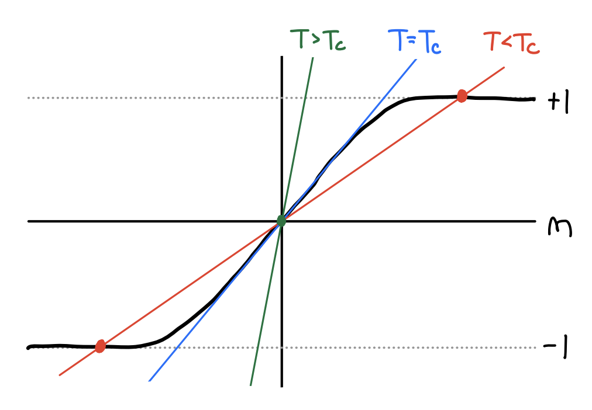
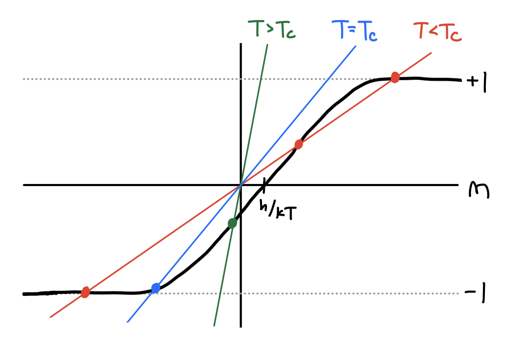

Interacting Particles
Now that we’ve covered the fundamentals of classical statistical mechanics we’ll turn ourselves toward an important application of interest: the behavior of real gases, where particles are allowed to interact with each other. Recall the ideal gas assumes only non-interacting particles. We can extend the validity of the ideal gas by finding a virial expansion of the pressure in powers of density. We’ll then use simplified potentials and mean field approximations to derive the important van der Waals equation of state and study its implications. This will then lead to a discussion of liquid-gas phase transitions and critical point behavior.
Cumulant Expansion
We’ll start by formulating the statistical mechanics problem for a gas with an arbitrary interaction potential. Consider a gas of \(N\) indistinguishable particles in a fixed container \(\mathcal{B}\) of volume \(V\). Suppose the gas has a Hamiltonian of the form \[ H = \sum_{i=1}^N \bigg(\frac{\mathbf{p}_i}{2m} + V(\mathbf{x}_i)\bigg) + U(\mathbf{x}_1, \mathbf{x}_2, \cdots, \mathbf{x}_N), \] where \(V(\mathbf{x}_i)\) is the usual potential specifying that particle \(i\) must be inside the container, and \(U(\mathbf{x}_1, \mathbf{x}_2, \cdots, \mathbf{x}_N)\) is some general interaction potential between the \(N\) particles. Let’s proceed using the canonical ensemble and try to find the partition function \(Z(T,V,N)\). Following the same logic as we did with the ideal gas, we have \[ \begin{align*} Z &= \frac{1}{N! h^{3N}} \int d^{3N} \mathbf{x} \ d^{3N} \mathbf{p} \ e^{-\beta H} \\ &= \frac{1}{N! h^{3N}}\int_\mathcal{B} d^{3N} \mathbf{x} \ e^{-\beta U} \int d^{3N} \mathbf{p} \ e^{-\beta\sum \frac{\mathbf{p}_i}{2m}} \\ &= \frac{1}{N!} \bigg(\frac{V}{\lambda^3}\bigg)^N \int_\mathcal{B} \frac{d^{3N} \mathbf{x}}{V^N} \ e^{-\beta U}, \end{align*} \] where \(\lambda = \frac{h}{\sqrt{2\pi m k_B T}}\) is the Thermal DeBroglie wavelength defined previously. In this form, we recognize that the terms outside the integral are just the partition function of the ideal gas, which we’ll denote by \(Z_0\). If we think of \(\frac{1}{V^N}\) is some kind of uniform probability density over the container \(\mathcal{B}\) then we can imagine the above integral being some kind of expected value \(\langle e^{-\beta U} \rangle\). We can thus write the partition function in the simple form \[ Z = Z_0 \langle e^{-\beta U} \rangle. \] Notice the expected value can be thought of as a kind of characteristic function for \(U\), except with \(ik\) replaced by \(\beta\). If we expand the characteristic function as a series in terms of the moments, we get \[ Z = Z_0 \sum_{k=0}^\infty \frac{(-\beta)^k}{k!} \langle U^k \rangle. \] That means if we instead look at \(\log Z\), then the sum over the moments will become a sum over the cumulants, giving \[ \log Z = \log Z_0 + \sum_{k=1}^\infty \frac{(-\beta)^k}{k!} \langle U^k \rangle_c. \] This is called the cumulant expansion. We’ve created an expansion of the free energy in terms of the cumulants of the interaction potential. Unfortunately though, we still have no systematic way to actually calculate these cumulants.
Pairwise Interactions
To make further progress we need to make assumptions about the functional form of the interaction potential. The most obvious first step is to imagine the potential consists only of pairwise interactions. While one could imagine interactions between three particles, four particles, or any higher number of them, it’s the pairwise interactions that encompass the common interactions found in nature for weakly interacting systems. Roughly speaking, provided we aren’t dealing with a dense plasma, pairwise interactions alone yield a sufficient description of the behavior of a gas.
In this form, the full potential \(U\) breaks up into a sum of potentials \(u\) over pairs of particles. We’ll assume the pairwise interactions only interact radially and ignore any self-interactions. We can thus write \[ U(\mathbf{x}_1, \mathbf{x}_2, \cdots, \mathbf{x}_N) = \sum_{i=1}^N \sum_{j=i+1}^N u(|\mathbf{x}_i - \mathbf{x}_j|) \equiv \sum_{i < j} u_{ij} \ . \]
Quadratic Expansion
With this functional form we can proceed to simplify the cumulants one by one. Let’s start with the mean. Notice that since all integrals are over the same potential over the same region, we can think of them as a multiple of a single pairwise integral. There are \(\binom{N}{2}\) such integrals. Each integral is only over two coordinates. The rest yield a factor of \(V^{N-2}\). We thus have \[ \begin{align*} \langle U \rangle_c &= \sum_{i < j} \int_\mathcal{B} \frac{d^{3N} \mathbf{x}}{V^N} \ u_{ij} \\ &= \frac{N(N-1)}{2} \frac{V^{N-2}}{V^N} \int_\mathcal{B} d^3\mathbf{x}_1 \ d^3\mathbf{x}_2 \ u_{12}. \end{align*} \] Finally, we can change variables and integrate over the center of mass coordinate \(\mathbf{X}\) and relative coordinate \(\mathbf{x}\). This lets us pull out another factor of \(V\). If we employ the thermodynamic limit and assume the interaction ranges are much less than the size of the container, we have \[ \langle U \rangle_c \approx \frac{N^2}{2V} \int d^3\mathbf{x} \ u(r). \] Using the same technique we can proceed to find the variance of \(U\) as well. Evidently, we have \[ \langle U^2 \rangle_c = \sum_{i < j} \sum_{k < \ell} \bigg(\big\langle u_{ij} u_{k\ell} \big\rangle - \big\langle u_{ij} \big\rangle \big\langle u_{k\ell} \big\rangle \bigg). \] We now have to proceed case-by-case. There are three cases to consider.
Case 1 (\(i \neq k\) and \(j \neq \ell\)): In this case all the position vectors are distinct. Since each position is independent, we can factor the joint moment to get \(\big\langle u_{ij} u_{k\ell} \big\rangle = \big\langle u_{ij} \big\rangle \big\langle u_{k\ell} \big\rangle\), which of course implies that the contributions of these terms must vanish in the variance calculation.
Case 2 (\(i=k\) and \(j \neq \ell\)): In this case exactly two position vectors will be equal in each term. However, we can still change variables by defining \(\mathbf{x}_{ij} \equiv \mathbf{x}_i - \mathbf{x}_j\) and \(\mathbf{x}_{i\ell} \equiv \mathbf{x}_i - \mathbf{x}_\ell\). These relative position vectors are also independent of each other, which again means we can factor the joint moments to get \(\big\langle u_{ij} u_{i\ell} \big\rangle = \big\langle u_{ij} \big\rangle \big\langle u_{i\ell} \big\rangle\), which implies that the contributions of these terms must also vanish in the variance calculation.
Case 3 (\(i = k\) and \(j = \ell\)): The last case is when both pairs are the equal. This just implies that \(\big\langle u_{ij} u_{ij} \big\rangle = \big\langle u_{ij}^2\big\rangle\).
We finally have then that the variance of \(U\) is just \[ \langle U^2 \rangle_c = \sum_{i < j} \bigg(\big\langle u_{ij}^2 \big\rangle - \big\langle u_{ij}\big\rangle^2\bigg). \] In a way this kind of makes sense. The full variance is just the pairwise sum of the individual pairwise variances. Since each moment is just the same integral over \(\binom{N}{2}\) possible configurations, we can simplify the expression to \[ \langle U^2 \rangle_c = \frac{N(N-1)}{2} \bigg[\frac{1}{V}\int_{\mathcal{B}} d^3\mathbf{x} \ u^2(r) - \frac{1}{V^2}\bigg(\int_{\mathcal{B}} d^3\mathbf{x} \ u(r)\bigg) \bigg]. \] In the limit of large \(N,V\) the second term will be much smaller than the first, hence we can write \[ \langle U^2 \rangle_c \approx \frac{N^2}{2V} \int d^3\mathbf{x} \ u^2(r). \] This means to second order in the cumulants we can evidently write \[ \begin{align*} \log Z &\approx \log Z_0 - \beta \langle U \rangle_c + \frac{\beta^2}{2} \langle U^2 \rangle_c - \cdots \\ &\approx N \log \frac{Ve}{\lambda^3} + \frac{N^2}{2V} \bigg(-\beta \int d^3\mathbf{x} \ u(r) + \frac{\beta^2}{2} \int d^3\mathbf{x} \ u^2(r) - \cdots\bigg). \end{align*} \] To see what’s going on here it’s most useful to look at the pressure. Using the formula \(\beta P = \frac{\partial \log Z}{\partial V}\), we have \[ \beta P = \frac{N}{V} - \frac{N^2}{2V^2} \bigg(-\beta \int d^3\mathbf{x} \ u(r) + \frac{\beta^2}{2} \int d^3\mathbf{x} \ u^2(r) - \cdots\bigg). \] It’s pretty clear now what we’ve done. We’ve created a series for the pressure in powers of the density \(n=\frac{N}{V}\). This series is called the virial expansion. Had we kept higher-order interaction terms this series would continue on in higher powers of \(n\), \[ \beta P = n - \frac{n^2}{2} \bigg(-\beta\int d^3\mathbf{x} \ u(r) + \frac{\beta^2}{2} \int d^3\mathbf{x} \ u^2(r) - \cdots\bigg) + O(n^3). \] In the most dilute limit we recover the ordinary ideal gas law. The first correction subtracts a term proportional to \(n^2\). And so on.
Mayer Function
While it’s nice to have an expansion in terms of the density, what we have isn’t actually practical to work with. In particular, the second virial coefficient is a series of integrals that are not at all obvious to compute. We can attempt to sum it up though by using the expansion of the exponential function to write write \[ \begin{align*} -\beta \int d^3\mathbf{x} \ u(r) + \frac{\beta^2}{2} \int d^3\mathbf{x} \ u^2(r) - \cdots &= \int d^3\mathbf{x} \ \sum_{k=1}^\infty \frac{(-\beta)^k}{k!} u^k(r) \\ &= \int d^3\mathbf{x} \ \bigg[\exp\big(-\beta u(r)\big) - 1\bigg] . \\ \end{align*} \] If we define the integrand to be \(f(r) \equiv \exp\big(-\beta u(r)\big) - 1\), what we’ve done is found an expansion in terms of various integrals of \(f(r)\), usually called the Mayer function. The integral of this function will converge as long as the potential itself decays sufficiently rapidly, e.g. as the van der Waals interaction would. In terms of this function, we can re-write the virial expansion as \[ \beta P = n - \frac{n^2}{2} \int d^3\mathbf{x} \ f(r) + O(n^3). \] Provided we can integrate this Mayer function for some given interaction potential, we can find an expansion for the pressure at least up to second order in the density. It’s worth noting, however, that this is only a good expansion in the dilute limit when densities are small. In the opposite situation we’d have the dense limit, which describes the behavior of plasmas. In that scenario we’d want to use a completely different type of expansion, e.g. ring diagrams.
Of course, we’d like to be able to look at all the higher virial coefficients as well, not just the second order term. Continuing to do so with cumulants will be cumbersome since we’re always stuck summing these kinds of series. The fact that things come out so cleanly in terms of the Mayer function suggests that we should instead consider expanding things in terms of it rather than the cumulants. This leads to the cluster expansion.
Cluster Expansion
Let’s recall what it is we’re trying to evaluate. We’d like to find an expression for the partition function \[ Z = Z_0\int_\mathcal{B} \frac{d^{3N} \mathbf{x}}{V^N} \ e^{-\beta U} = Z_0 \int_\mathcal{B} \frac{d^{3N} \mathbf{x}}{V^N} \prod_{i < j} e^{-\beta u_{ij}} \ . \] If we use the Mayer function to define \(f_{ij} \equiv e^{-\beta u_{ij}}\), we can instead write \[ Z = \frac{Z_0}{V^N} \int_\mathcal{B} d^{3N} \mathbf{x} \prod_{i < j} (1 + f_{ij}) \equiv \frac{Z_0}{V^N} Q. \]
Cluster Diagrams
Our challenge is to find a way to evaluate this integral over all possible pairs. If we expand the product \(\prod (1+f_{ij})\) we’d get a series in increasing powers of \(f\), where each product appears exactly once, \[ \prod_{i < j} (1 + f_{ij}) = 1 + \sum_{i < j} f_{ij} \ + \sum_{i < j < k < \ell} f_{ij} f_{k\ell} + \cdots \ . \] It’s helpful to visualize this product in a different way using cluster diagrams. Imagine the \(N\) particles as representing \(N\) points in a graph. Think of each product of \(f_{ij}\) as an edge connecting the two points \(i\) and \(j\). In the expansion, a \(1\) represents no points being connected. A single \(f_{ij}\) represents only the points \(i\) and \(j\) being connected. A double term \(f_{ij}f_{k\ell}\) represents two connections, one between \(i\) and \(j\), the other between \(k\) and \(\ell\). And so on for higher order terms.
In this representation, we can schematically represent the general \(Q\) function as the sum over all possible graphs over \(N\) points, where each sum of \(\ell\) powers of \(f\) represents a sum over all graphs with exactly \(\ell\) edges, \[ \begin{align*} Q &= \int_\mathcal{B} d^{3N} \mathbf{x} \prod_{i < j} (1 + f_{ij}) \\ &= \int_\mathcal{B} d^{3N} \mathbf{x} \bigg[1 + \sum_{i < j} f_{ij} \ + \sum_{i < j < k < \ell} f_{ij} f_{k\ell} + \cdots \bigg] \\ &= \int_\mathcal{B} d^{3N} \mathbf{x} \ \bigg[(\text{disconnected graph}) + \sum (\text{all graphs with one edge}) + \sum (\text{all graphs with two edges}) + \cdots\bigg] \ . \end{align*} \] Though not necessarily obvious, we can use a trick from graph theory to reorganize this sum over graphs into something more convenient. For any one graph being summed, we can think of it as itself being a product of its own connected components. For example, suppose we had a particular graph of \(N=6\) points in which point \(1\) is disconnected, points \(2\) and \(3\) are connected, and points \(4\), \(5\), and \(6\) are all connected to each other. This would represent the product \[ \int_\mathcal{B} d^{3} \mathbf{x}_1 \int_\mathcal{B} d^{3} \mathbf{x}_2 d^{3} \mathbf{x}_3 \ f_{23} \int_\mathcal{B} d^{3} \mathbf{x}_4 d^{3} \mathbf{x}_5 d^{3} \mathbf{x}_6 \ f_{45} f_{56}. \] Now, define \(b_\ell\) to be the sum of all connected components connecting exactly \(\ell\) points. That is, \(b_1\) is the sum over all completely disconnected clusters, \(b_2\) is the sum over all pairs of connected edges, \(b_3\) is the sum over all triplets of connected points, and so on. Diagrammatically these might look as follows.

Note how the number of terms in the sum blows up with increasing \(\ell\). For example, \(b_1\) and \(b_2\) each contain one configuration, \(b_3\) contains \(4\) configurations. It turns out that \(b_4\) contains \(24\) different terms. That is, there are \(24\) ways to connect \(4\) points with all possible configurations of edges. Etc.
Now, for each graph being summed over in the \(Q\) function, we expect there to be some number \(n_\ell\) of components in that graph connecting exactly \(\ell\) points. Taking the product over all of these components for each \(\ell = 1, \cdots, N\) then gives the value of that one graph. In doing this, note that some components may end up being over-counted, so we have to include a multiplicity factor \(W(\{n_\ell\})\) in each product to correct the counts. In the end, we’re now representing \(Q\) as a sum over all graphs such that each graph contains exactly \(N\) points and partitions into exactly \(n_\ell\) clusters for each allowed \(\ell\). As an equation, this means
\[ Q = \sideset{}{'}\sum_{\underset{N=\sum n_\ell \ell}{\{n_\ell\}}} W(\{n_\ell\})\prod_{\ell=0}^N b_\ell^{n_\ell} \ . \] Notice the notation used here. This is a constrained sum, a sum over all partitions such that that \(N=\sum_\ell n_\ell \ell\). The multiplicity factor \(W(\{n_\ell\})\) turns out to have the explicit form \[ W(\{n_\ell\}) = \frac{N!}{\prod_\ell (\ell!)^{n_\ell} n_\ell!}. \] This comes from the fact that for each graph we’re permuting \(N\) points. But for each connected component we need to divide out the number of ways of permuting those points. Since there are \(n_\ell\) such components, this means we need to divide by \((\ell!)^{n_\ell}\) for each \(\ell\). We’re still overcounting though, because exchanging any \(\ell\) cluster with another \(\ell\) cluster shouldn’t change anything, so we also need to divide by \(n_\ell!\). This gives the full multiplicity factor.
At any rate, attempting to sum over all graphs to get \(Q\) still seems like a daunting task. This is mainly due to the constrained sum, which requires that we sum over all possible partition sizes \(n_\ell\) consistent with the constraint \(\sum \ell n_\ell = N\). In general finding constrained sums is hard. But there’s a work around. Namely, we can allow \(N\) to vary as well. We can do that by looking not at the canonical partition function \(Z\), but instead the grand canonical partition function \(\mathcal{Z}\). Then all we have to do is replace any occurrence of \(N\) with \(\sum \ell n_\ell\) and sum over all possible partitions \(\{n_\ell\}\). Then we’ll have \[ \begin{align*} \mathcal{Z} &= \sum_{N=0}^\infty e^{\beta\mu N} Z \\ &= \sum_{N=0}^\infty e^{\beta\mu N} \sideset{}{'}\sum_{\underset{N=\sum n_\ell \ell}{\{n_\ell\}}} \frac{W(\{n_\ell\})}{N! \lambda^{3N}}\prod_{\ell=0}^N b_\ell^{n_\ell} \\ &= \sum_{\{n_\ell\}} \bigg(\frac{e^{\beta\mu}}{\lambda^3}\bigg)^{\sum \ell n_\ell} \frac{1}{\prod_\ell (\ell!)^{n_\ell} n_\ell!} \prod_{\ell=0}^{\sum \ell n_\ell} b_\ell^{n_\ell} \\ &= \prod_{\ell=1}^\infty \sum_{n_\ell=0}^\infty \frac{b_\ell^{n_\ell}}{(\ell!)^{n_\ell} n_\ell!} \bigg(\frac{e^{\beta\mu}}{\lambda^3}\bigg)^{\ell n_\ell} \\ &= \prod_{\ell=1}^\infty \exp\bigg[\frac{b_\ell}{\ell!} \bigg(\frac{e^{\beta\mu}}{\lambda^3}\bigg)^{\ell}\bigg] \ . \end{align*} \] Taking the logarithm then converts the product into the simpler sum \[ \boxed{ \log \mathcal{Z} = \sum_{\ell=1}^\infty \frac{b_\ell}{\ell!} \bigg(\frac{e^{\beta\mu}}{\lambda^3}\bigg)^{\ell} } \ . \]
Virial Expansion
As with the cumulant expansion, what we’re mainly interested in here is getting a formula for the pressure. The easiest way to do that here is to use extensivity. Using the fact \(\mathcal{G} = -k_B T \log \mathcal{Z} = -PV\) for an extensive system, we can express the pressure as \[ \beta P = \frac{1}{V} \log \mathcal{Z} = \sum_{\ell=1}^\infty \frac{1}{\ell!} \frac{b_\ell}{V} \bigg(\frac{e^{\beta\mu}}{\lambda^3}\bigg)^{\ell}. \] Notice that this quantity must be intensive since \(\log \mathcal{Z}\) must be extensive and we’re dividing by the volume \(V\). To make this clear, let’s conveniently define \(\textblank_\ell \equiv \frac{b_\ell}{V}\). Let’s also define \(x \equiv \frac{e^{\beta\mu}}{\lambda^3}\). Noting that \(b_1 = V\) implies \(\textblank_1 = 1\), we can thus write \[ \beta P = \sum_{\ell=1}^\infty \frac{\textblank_\ell}{\ell!} x^{\ell} = x + \frac{\textblank_2}{2} x^2 + \frac{\textblank_3}{6} x^3 + \cdots \ . \] We thus have a series for pressure in terms of this scaled fugacity variable \(x\). However, what we’d like to get is a virial expansion. That is, we’d like to express the pressure as a series in increasing powers of the density \(n\), \[ \beta P = n + B_2 n^2 + B_3 n^3 + \cdots \ . \] To do that, recall that we can express \(N \approx \langle N \rangle\) in the grand canonical ensemble with the formula \(N = \frac{\partial \log \mathcal{Z}}{\partial (\beta\mu)}\). Dividing both sides by \(V\) and again using extensivity, we can then express the number density \(n\) as its own series in powers of \(x\), \[ n = \frac{1}{V} \frac{\partial \log \mathcal{Z}}{\partial (\beta\mu)} = \sum_{\ell=1}^\infty \frac{\textblank_\ell}{(\ell-1)!} x^{\ell} = x + \textblank_2 x^2 + \frac{\textblank_3}{2} x^3 + \cdots \ . \] We’ve managed to express both \(\beta P\) and \(n\) each as a series expansion in \(x\). To find \(\beta P\) as a function of \(n\) we need to eliminate \(x\). To do that we need to invert the series \(n=n(x)\) to get \(x=x(n)\). In general, there’s no way to invert a series like this and get a closed form solution for \(x=x(n)\). However, we can get a series for \(x\) in powers of \(n\). This method will suffice for us, as we’re only interested in the first few terms in the virial expansion anyway.
We’ll proceed as follows:
Naively solve for \(x\) by moving all the non-linear powers to the other side and asserting they must be \(O(n^2)\), \[ x = n - \textblank_2 x^2 - \frac{\textblank_3}{2} x^3 - \cdots = n + O(n^2). \] To first order this makes sense, as for small densities the ideal gas expression \(\beta P = n\) should be satisfied.
Substitute \(x=n+O(n^2)\) back into the original equation and keep terms up to \(O(n^3)\), \[ \begin{align*} x &= n - \textblank_2 x^2 - \frac{\textblank_3}{2} x^3 - \cdots \\ &= n - \textblank_2 \big(n+O(n^2)\big)^2 - \frac{\textblank_3}{2} \big(n+O(n^2)\big)^3 - \cdots \\ &= n - \textblank_2 n^2 + O(n^3). \\ \end{align*} \]
Substitute \(x = n - \textblank_2 n^2 + O(n^3)\) back into the original equation and keep terms up to \(O(n^4)\), \[ \begin{align*} x &= n - \textblank_2 x^2 - \frac{\textblank_3}{2} x^3 - \cdots \\ &= n - \textblank_2 \big(n - \textblank_2 n^2 + O(n^3)\big)^2 - \frac{\textblank_3}{2} \big(n - \textblank_2 n^2 + O(n^3)\big)^3 - \cdots \\ &= n - \textblank_2 n^2 + \bigg(2\textblank_2^2 - \frac{\textblank_3}{2}\bigg) n^3 + O(n^4). \\ \end{align*} \]
We can continue on like this, using the previous result for \(x\) to get the expression for \(x\) up to the next highest power in \(n\). We’ll stop here though and plug in this third-order approximation of \(x\) into the formula for \(\beta P\). We have \[ \begin{align*} \beta P &= x + \frac{\textblank_2}{2} x^2 + \frac{\textblank_3}{6} x^3 + \cdots \\ &\approx \bigg[n - \textblank_2 n^2 + \bigg(2\textblank_2^2 - \frac{\textblank_3}{2}\bigg)n^3\bigg] \\ &+ \frac{\textblank_2}{2}\bigg[n - \textblank_2 n^2 + \bigg(2\textblank_2^2 - \frac{\textblank_3}{2}\bigg)n^3\bigg]^2 \\ &+ \frac{\textblank_3}{6}\bigg[n - \textblank_2 n^2 + \bigg(2\textblank_2^2 - \frac{\textblank_3}{2}\bigg)n^3\bigg]^3. \\ \end{align*} \] Rearranging terms in increasing powers of \(n\), we finally have a virial expansion up to \(O(n^4)\), \[ \beta P = n - \frac{\textblank_2}{2} n^2 + \bigg(\textblank_2^2-\frac{\textblank_3}{3}\bigg) n^3 + O(n^4). \] We now have a systematic way to get a virial expansion up to any arbitrary power of \(n\). After some simplification, the first few virial coefficients turn out to be given by \[ \begin{align*} B_1 &= 1 \ , \\ B_2 &= -\frac{\textblank_2}{2} = -\frac{1}{2} \int_{\mathcal{B}} d^3 \mathbf{x} \ f(\mathbf{x}) \ , \\ B_3 &= \bigg(\textblank_2^2-\frac{\textblank_3}{3}\bigg) = -\frac{1}{3} \int_{\mathcal{B}} d^3 \mathbf{x} \ d^3 \mathbf{x}' \ f(\mathbf{x}) f(\mathbf{x}') f(\mathbf{x}-\mathbf{x}') \ . \\ \end{align*} \] Notice the first two virial coefficients agree with what we calculated from the cumulant expression. The \(B_3\) term is new, as we had no easy way to calculate it before. In principle we could keep going to higher order coefficients if we like, but we won’t.
Of course, we still have no way to actually calculate what the virial coefficients are since we don’t know what the interaction potential \(u\) is, hence neither what the Mayer function \(f\) is. To proceed further we need to make some assumptions about the interaction potentials involved in a typical gas.
Van der Waals Interactions
The true interaction forces in real gases can be quite complicated. Typically gases will be electrically neutral, so Coulomb forces don’t tend to play a role. What’s left are much shorter-range forces arising from the permanent or induced dipole interactions between particles. These short-range forces are called van der Waals forces. Typically, such forces fall off very rapidly with particle separation due to the background of other molecules, and rapidly increase as the two particles get too close together due to the Pauli exclusion principle forbidding their ability to be on top of each other.
Simple Model
A very crude model of the van der Waals force that’s decent enough for statistical mechanical purposes is to assume the forces arise from a radially symmetric potential of the form \[ u(r) = \begin{cases} -u_0 \bigg(\frac{r_0}{r}\bigg)^6 & r \geq r_0 \ , \\ \infty & r < r_0 \ . \\ \end{cases} \] At close distances we’ll assume the force is infinitely repulsive when \(r < r_0\). This hard wall idea approximates the effect that particles will bounce off each other if they get too close, with \(r_0\) usually on the order of Angstroms for atoms or molecules. When \(r \gg r_0\) the force becomes weakly attractive due to screening, with the potential falling off like \(r^{-6}\). The other constant \(u_0\) characterizes the strength of the interaction, with \(u_0\) usually something like room temperature in temperature units.

We can now proceed to calculate the virial coefficients for such an interaction. We already know \(B_1 = 1\), so there’s nothing to do there. We’ll recover the ideal gas law at low densities as expected. For \(B_2\), we need to find the integral of \(f(r)\), which is \[ \begin{align*} \int_{\mathcal{B}} d^3 \mathbf{x} \ f(r) &= \int_0^\infty 4\pi r^2 dr \ \big(e^{-\beta u(r)}-1\big) \\ &= -\int_0^{r_0} 4\pi r^2 dr + \int_{r_0}^\infty 4\pi r^2 dr \ \bigg[\exp\bigg(\beta u_0 \bigg(\frac{r_0}{r}\bigg)^6\bigg)-1\bigg] \\ &= -\frac{4\pi}{3} r_0^3 + \int_{r_0}^\infty 4\pi r^2 dr \ \bigg[\exp\bigg(\beta u_0 \bigg(\frac{r_0}{r}\bigg)^6\bigg)-1\bigg] . \\ \end{align*} \] To get at the second term analytically we’ll have to make a further approximation. Suppose \(\beta u_0 \ll 1\), meaning \(u_0 \ll k_B T\). This is the high temperature regime of classical statistical mechanics. Here we can approximate the integral as \[ \int_{r_0}^\infty 4\pi r^2 dr \ \bigg[\exp\bigg(\beta u_0 \bigg(\frac{r_0}{r}\bigg)^6\bigg)-1\bigg] \approx \int_{r_0}^\infty 4\pi r^2 dr \ \beta u_0\bigg(\frac{r_0}{r}\bigg)^6 = \frac{4\pi}{3} r_0^3 \beta u_0. \] Notice both terms include the term \(\omega \equiv \frac{4\pi}{3} r_0^3\). This is just the volume of a sphere of radius \(r_0\), called the excluded volume. It’s the volume of each particle’s electron cloud in a sense. In terms of the excluded volume, we can thus write \(B_2\) simply as \[ B_2 = -\frac{1}{2} \int_{\mathcal{B}} d^3 \mathbf{x} \ f(r) = \frac{\omega}{2} (1-\beta u_0). \] In principle, we could also then proceed to calculate the third virial coefficient \(B_3\). However, this turns out to be much harder, as now we have to integrate over three-particle interactions. We can eliminate one of the coordinates and write \[ B_3 = -\frac{1}{3} \int_{\mathcal{B}} d^3 \mathbf{x} \ d^3 \mathbf{x}' \ f(\mathbf{x}) f(\mathbf{x}') f(\mathbf{x}-\mathbf{x}'), \] but actually evaluating this integral analytically is an onerous task. Of course, it can often be found numerically. And on the story goes for the higher virial coefficients as well. We’re thus left with the approximation \[ \beta P = n + \frac{\omega}{2} (1-\beta u_0) n^2 + O(n^3) + \cdots. \] Let’s just focus on the second order part of this equation and see what happens in that case. Whatever it is should at least be more accurate than the ideal gas approximation. If we group the terms involving \(\beta\) on the left-hand side, we have \[ \beta \bigg(P + \frac{\omega u_0}{2} n^2\bigg) = n + \frac{\omega}{2} n^2 + \cdots \ . \] Now, for small \(n\), the right-hand side looks like the binomial series expansion for \(\big(1-\frac{N\omega}{2}\big)^{-1}\). Let’s conveniently define two constants, \(a \equiv \frac{1}{2} u_0 \Omega\) and \(b \equiv \frac{\omega}{2}\). If we do that and use the fact that \(n = \frac{N}{V}\), we can write the above equation as \[ \boxed{ \bigg(P + a\frac{N^2}{V^2}\bigg)(V-Nb) = Nk_B T. } \] This well-known equation of state is called the van der Waals equation.
Validity of van der Waals
Before proceeding, it’s worth stepping back and asking whether the virial expansion we just performed is a good expansion, that it makes sense physically. Let’s try to see what might cause the van der Waals equation to fail:
High densities: Clearly if \(n\) is large we can’t truncate the virial expansion to second order like we did. We’d need to deal with all the higher order terms as well. Fortunately for a gas this isn’t really an issue. Notice that the series grows like the ratio of the first two terms, which goes like \[ \frac{B_2n^2}{B_1n} = \frac{\frac{\omega}{2} (1-\beta u_0)n^2}{n} \sim \frac{N\omega}{V}. \] Roughly speaking, \(\frac{N\omega}{V}\) is the density of the gas divided by its density when liquified. For air at STP, we already saw that ratio of densities is about \(10^{-3}\), clearly small enough that we can justify neglecting higher order terms in the expansion. Of course, while this is true for gases, it’s not always true. For example, it’s not true for liquids or plasmas.
Low temperatures: In deriving the virial coefficient \(B_2\) we made the crucial assumption that \(k_B T \gg u_0\). That is, we assumed that temperatures are large compared to the molecular interaction strengths. For gases at room temperatures this is fine, but as temperatures go towards absolute zero things break down and this approximation no longer holds.
Long-range interactions: Another failure mode we didn’t explicitly mention above is the nature of the interaction potential. We assumed a potential of the form \(u(r) \sim r^{-6}\), which we were able to integrate from \(r_0\) to \(\infty\). If we look back at the integral though, we can see that won’t be true for every power of \(r\). In particular, such an integral will diverge for powers \(k > -3\). This means, for example, that we can’t treat Coulomb interactions this way, where \(k=-1\). These divergent integrals arise when interactions are long-range, i.e. when they don’t fall off reasonably fast. For the van der Waals potential we don’t have this problem. But if we’re dealing with, say plasmas, we do have to worry about this issue. In that case we’d need to do a completely different kind of expansion, e.g. using ring diagrams.
The van der Waals equation was originally derived phenomenologically based on the following two physical arguments:
- We expect the available volume to each particle is reduced by an amount proportional to \(N\). Each particle occupies a definite volume, namely the excluded volume \(\omega\). As we saw from the hard sphere gas, this means that the available volume gets reduced by \(\frac{N\omega}{2}\), not \(N\omega\) as we might expect.
- The presence of an interaction strength \(u_0\) means each particle spends more time away from the walls of the container due to particles in the center attracting it inward. This has the effect of reducing the pressure on the walls of the container by some amount proportional to \(n^2\).
In the lab, \(a\) and \(b\) are measured experimentally and tabulated for each gas of interest. For most real gases the parameters tend to be quite small at typical densities. For example, for water, tables give the van der Waals constants in chemistry units as \(a = 5.464 \ \frac{\text{L}^2 \ \text{atm}}{\text{mol}^2}\) and \(b = 0.03049 \ \frac{\text{L}}{\text{mol}}\). In SI units, these become \(a = 1.53 \cdot 10^{-48}\) and \(b = 5.06 \cdot 10^{-29}\).
In typical conditions the pressure correction will often be much larger than the volume correction. With water, the volume correction becomes important when \(nb \sim 1\), or when the mass density gets up to \(\rho \sim 0.6 \ \frac{\text{g}}{\text{cm}^3}\). Note the density of liquid water is about \(\rho \sim 1 \ \frac{\text{g}}{\text{cm}^3}\), meaning water practically needs to liquify for the volume correction to become important. Compare that with the pressure correction, which becomes important when \(an^2 \ll P\). At atmospheric pressure, this effect would seem to become important when \(\rho \sim 0.008 \ \frac{\text{g}}{\text{cm}^3}\), which is much smaller, closer to the density of air in fact.
Phase Transitions
The fact that the van der Waals equation only seems to become important as a gas starts to liquify suggests that we should study this transition region from gas to liquid. This is one of many examples of a phase transition, an apparently discontinuous change in the properties of a system. When dealing with gases, phase transitions often manifest as sharp lines in the phase diagram, i.e. a diagram of pressure vs temperature. Such a diagram often looks something like the following.

Phase diagrams often show similar patterns. At low \(T\) the gas is in its solid phase. All the particles are aligned in something like a crystal lattice. At higher \(T\) the gas moves into its liquid phase. In this phase, the particles are still close together, but they’re no longer locked into a lattice anymore. They’re allowed to move around on top of each other. As \(T\) increases further the gas moves into its gas phase. In this phase the particles start to move apart from each other, behaving more and more like an ideal gas where \(P \propto T\).
What’s more interesting are the sharp lines separating the phases. Suppose we fixed \(T\) relatively high and started increasing \(P\). The gas starts in its gas phase, but at some pressure \(P=P(T)\) the gas undergoes a phase transition, turning sharply into a liquid as it crosses the gas-liquid phase line. What’s more interesting, however, is that this is only true for temperatures below some critical temperature \(T_c\). If \(T > T_c\) no phase transition happens at all. Something strange evidently happens at this point.
Critical Points
To understand this in more depth let’s consider again the van der Waals interaction \(PV\) diagram. As a function of \(P\), we have \[ P = \frac{Nk_B T}{V-Nb} - a \frac{N^2}{V^2}. \] If we plot the isotherms of this equation for different values of \(T\), we get something like the following.

First, notice that all the isotherms asymptotically approach the reduced volume \(Nb=\frac{N\omega}{2}\) as \(V \rightarrow 0\). This is a consequence of the physical fact that the gas becomes incompressible once it reaches its liquid phase. The isotherms separate into three distinct regimes depending on whether \(T\) is greater than some special critical temperature \(T_c\),
- When \(T \gg T_c\) the \(n^2\) term is negligible and we essentially recover the hard sphere isotherms with \(P(V-Nb) \propto T\). These are the green curves plotted. As \(V \gg Nb\) these reduce to the ideal gas isotherms with \(PV \propto T\).
- When \(T \ll T_c\) we get the curves plotted in red. Unlike the green curves, these have a region with a wiggle. For a given pressure in this region, the curve seems to imply the gas can coexist at three different volumes (and hence three different densities as well). In reality, one of these is disallowed by thermodynamic stability. The dashed part of the curve is unstable since it has negative compressibility. As we’ll see, the black line correctly describes the curve in this region.
- Last, the critical isotherm at \(T=T_c\) is plotted in blue. This curve is what separates the first two regimes. Each pressure corresponds to a unique volume, but the curve does have a flat region around some special critical point \((V_c,P_c)\).
We can pretty easily solve for the critical values \((T_c,V_c,P_c)\). Since we have three values to solve for, we need to find three independent equations. The first is easy, as \((T,V,P)\) must clearly satisfy the van der Waals equation to lie on any of these curves at all. For the other two equations, we impose the condition that we’re on the \(T=T_c\) isotherm. A sufficient condition for this to hold is that the first and second derivatives of \(P(V)\) must vanish at the critical point. That is, we need to solve the following, \[ \begin{align*} P &= \frac{Nk_B T}{V-Nb} - a \frac{N^2}{V^2} \ , \\ \frac{\partial P}{\partial V} \bigg |_{T,N} &= -\frac{Nk_B T}{(V-Nb)^2} + 2a \frac{N^2}{V^3} \equiv 0 \ , \\ \frac{\partial^2 P}{\partial V^2} \bigg |_{T,N} &= 2\frac{Nk_B T}{(V-Nb)^3} - 6a \frac{N^2}{V^4} \equiv 0 \ . \\ \end{align*} \] These can be simultaneously solved to give \[ T_c = \frac{8a}{27k_Bb} , \qquad V_c = 3Nb , \qquad P_c = \frac{a}{27b^2} \ . \] The second equation is more often expressed in terms of a critical density to get rid of the dependence on \(N\), defined by \(\rho_c \equiv mn_c \equiv \frac{Nm}{V_c}\). As an example, for water, the critical values would be \[ T_c \approx 650 \ ^\circ \text{K} \ , \qquad \rho_c \approx 0.19 \ \frac{\text{g}}{\text{cm}^3} \ , \qquad P_c \approx 218 \text{ atm} \ . \] Note that while \(T_c\) and \(P_c\) agree with experiment, the critical density is slightly off. The measured value is actually \(\rho_c \approx 0.33\) in the same units. This discrepancy has to do with dipole-dipole interactions among water molecules that we’re not accounting for.
Stability
But what exactly do these critical values represent? Clearly something is going on around the critical temperature that we should investigate. Above \(T_c\) everything appears to be what we’d expect. We recover ideal gas like behavior, with some minor corrections as \(T \rightarrow T_c\) from above. Let’s look at the situation where \(T < T_c\) and see what might be happening. As mentioned above, the isotherms in this region exhibit non-physical behavior in the regions where the slope of the curve is increasing. Such a phenomenon would imply negative compressibility, since in the positively-sloped region we’d have \[ \kappa = -\frac{1}{V} \frac{\partial V}{\partial P} \bigg |_{T,N} < 0. \] Negative compressibility would imply a gas gets bigger as the pressure on it increases. But this is thermodynamically unstable. In fact it even violates the laws of statistical mechanics. To see why, recall by extensivity we have \(\log \mathcal{Z} = \beta PV\), which implies \[ \begin{align*} N &\approx \langle N \rangle = \frac{\partial \log\mathcal{Z}}{\partial (\beta\mu)} = V\frac{\partial P}{\partial \mu} \bigg |_T \ , \\ \sigma_N^2 &= \frac{\partial^2 \log\mathcal{Z}}{\partial (\beta\mu)^2} = \frac{\partial N}{\partial (\beta\mu)} = k_B T \frac{\partial N}{\partial \mu} \bigg |_T \ . \\ \end{align*} \] Dividing the two expressions and using the chain rule, we have \[ \begin{align*} \frac{\sigma_N^2}{N} &= \frac{k_B T \frac{\partial N}{\partial \mu} \big |_T}{V\frac{\partial P}{\partial \mu} \big |_T} \\ &= \frac{k_B T}{V} \frac{\partial N}{\partial P} \bigg |_T \\ &= \frac{k_B T}{V} \bigg(-\frac{\partial N}{\partial V} \bigg |_{T,P} \ \frac{\partial V}{\partial P} \bigg |_{T,N}\bigg) \\ &= -\frac{k_B T}{V} \frac{N}{V} \ \frac{\partial V}{\partial P} \bigg |_{T,N} \\ &= \frac{N k_B T}{V} \bigg(- \frac{1}{V} \frac{\partial V}{\partial P} \bigg |_{T,N} \bigg) \\ &= n k_B T \ \kappa_T \ . \end{align*} \] Now, recall the variance of a random variable must always be non-negative. This implies the above ratio must also be non-negative, which implies the compressibility must be as well. From thermodynamics, we also know that this must also imply thermodynamical stability \(\delta P \delta V \leq 0\), which we saw is equivalent to having \(\kappa \geq 0\). These stability conditions are essentially what determine which states are allowed and which aren’t. Thermodynamically unstable states can’t really happen, at least with any reasonable probability in the thermodynamic limit.
Maxwell Construction
So what’s going on in the subcritical region where \(T < T_c\)? In fact a phase transition is happening. Imagine varying the pressure on the gas and seeing how the volume (and hence the density) of the gas changes, e.g. by applying a force to a piston.
- At low pressures the allowed states are on the far right of the subcritical isotherms. In this region the ideal gas law more or less holds, perhaps with minor corrections. Any small changes in pressure will cause proportionally small changes in the volume of the gas. That is, the gas behaves like a gas. It’s in its gas phase.
- At high pressures the allowed states are instead on the far left of the isotherms, asymptotically approaching the barrier at the excluded volume \(Nb\). In this region, to get a small change in volume we’d need to apply a huge change in pressure. The gas is almost incompressible. In fact, the gas is in its liquid phase, since \(V \approx Nb\) implies the particles are densely packed together.
- In between these two regions the gas is in coexistence. At a given pressure \(P_{co}\), the curve takes on three distinct volumes (i.e. three densities). Two of these volumes are stable, meaning they can occur. The third is unstable, meaning it can’t occur. This means if we’re exactly at \(P_{co}\) the gas seemingly exists in two volumes at once, call them \(V_{gas}\) and \(V_{liq}\). This region of the \(PV\) diagram where two densities can simultaneously coexist is called the coexistence region. Due to the discontinuity, when crossing this region, the volume of the gas will evidently change by some discontinuous amount \(\Delta V = V_{gas} - V_{liq}\) as it apparently undergoes a phase transition from liquid to gas or vice versa.
Of course, the van der Waals equation isn’t right for a real gas at arbitrary densities. It’s only a dilute approximation. It should and indeed does fail for dense gases. That it’s predicting the behavior of a liquid and the phase transition is thus interesting. Maybe we can correct the equation to work even better by fixing what’s going on in the coexistence region.
Consider again the formula for the particle number along an isotherm, \[ N = V\frac{\partial P}{\partial \mu} \bigg |_T. \] To get the chemical potential along an isotherm we can rearrange and integrate \(d\mu = \frac{V}{N}dP\) to get \[ \mu(P) - \mu(P_0) = \int_{P_0}^P dP' \ \frac{V(P')}{N}. \] Let’s stop and think about what this integration is doing. It’s summing up horizontal slices under the isotherm from \(P_0\) to \(P\). As long as \(V(P)\) is single-valued this is perfectly fine. But inside the coexistence region \(V(P)\) is not single-valued, which means the integral will be path-dependent. For example, consider the following situation. Suppose we wanted to find the chemical potential from the point \(A\) to the point \(F\) along the isotherm shown below.

Along the path \(ABC\) the chemical potential \(\mu\) keeps increasing since \(dP\) is positive. Along \(CD\) though \(dP\) is negative, which means \(\mu\) goes back down. Then, along \(DF\), \(dP\) is positive again, causing \(\mu\) to again start increasing. The trajectory \(\mu(P)\) will cross at the points \(B\) and \(E\), causing the chemical potential to seemingly be multiple-valued in the region between \(C\) and \(D\). This crossing point occurs at the coexistence pressure \(P_{co}=P_E=P_B\).
To fix this problem we can make use of the thermodynamical fact that in equilibrium the gas should seek out the lowest available chemical potential at a given temperature and pressure. This means that in the multiple-valued region the gas should only traverse lower part of the path between \(C\) and \(D\) i.e. the path \(ABF\). For this to be true the closed loop \(CDE\) should vanish, \[ \oint_{P_B}^{P_E} dP \ \frac{V(P)}{N} = 0 . \] This is equivalent to saying the chemical potentials in the liquid and gas phases should equal in coexistence, i.e. \(\mu_{liq}=\mu_{gas}\). That is, in coexistence the gas is in chemical equilibrium, with the liquid and gas portions exchanging particles at an equal rate.
Enforcing chemical equilibrium is equivalent to finding \(P_{co}\) by drawing a horizontal line between the points \(B\) and \(E\) on the isotherm such that the areas in regions \(BDO\) and \(OCB\) equal and cancel out. This method of graphically finding this pressure is called the Maxwell construction. This sort of thing can be done in the lab by starting with a liquid at pressure \(P_{liq}\) and slowly decreasing the pressure at constant temperature until the same value \(P_{co}\) occurs twice for two different volumes.
Interestingly, the Maxwell construction seems to predict that at coexistence a gas can take on any volume between \(V_{liq}\) and \(V_{gas}\). The construction doesn’t tell us, however, which of these volumes will be taken on for a given gas in coexistence. We simply don’t know. Any mixture of densities in this region is possible.
Another relic of the Maxwell construction evidently is that the coexistence line extends beyond the non-physical region. While these added regions indeed have positive compressibility, they’re in fact metastable. It’s possible to show their chemical potential is in fact higher than the chemical equilibrium potential, for a given pressure and temperature. However, if we compress the gas very slowly we can coax the system into a metastable state. These states create what’s known as a super-cooled or super-heated liquid. But in these states any small disturbance will cause some amount of the gas to condense into the liquid, or vice versa.
Clausius-Clapyron Equation
We can also investigate the behavior of the coexistence region in the phase diagram. In the phase diagram, coexistence occurs along the sharp curve separating the gas and liquid phases. Along this curve the gas must again be in chemical equilibrium. We can use this condition to figure out the functional forms of these curves.
Recall by extensivity the chemical potential is just the Gibbs free energy per particle, i.e. \(G = \mu N\). In each phase we must have \[ dG = -SdT + VdP. \] Dividing both sides by \(N\) and asserting the chemical equilibrium condition \(\mu_{liq}=\mu_{gas}\), we have \[ d\mu_{liq} = -s_{liq} dT + v_{liq} dP = -s_{gas} dT + v_{gas} dP = d\mu_{gas}, \] where \(s \equiv \frac{S}{N}\) is the entropy per particle and \(v \equiv \frac{V}{N}\) is the volume per particle. Rearranging this formula thus says that the slope of the coexistence line in the phase diagram must satisfy \[ \frac{dP}{dT} = \frac{s_{gas}-s_{liq}}{v_{gas}-v_{liq}} = \frac{\Delta s}{\Delta v}. \] Since the entropy and volume in the gas phase will practically always exceed their values in the liquid phase, we can immediately conclude that the slope of this coexistence curve will generally be positive.
It’s more common to write this expression in terms of the specific latent heat, defined by \(L \equiv T\Delta s\). This is the amount of heat released per particle as the gas passes through the phase transition. In this form the formula for the slope of the coexistence line is called the Clausius-Clapyron equation, \[ \boxed{ \frac{dP}{dT} = \frac{L}{T \Delta v} } \ . \] In principle this can be a difficult formula to solve since we need to calculate the entropy of both phases. We can often make some simplifying assumptions though. For example, it’s often the case that \(L\) is roughly constant and \(v_{gas} \gg v_{liq}\). If we further assume the ideal gas law is approximately valid, we can write \(v_{gas} \approx \frac{k_B T}{P}\). Together, these imply \[ \frac{dP}{dT} \approx \frac{LP}{k_B T^2} \qquad \Longrightarrow \qquad P(T) \approx P_0 \exp\bigg[-\frac{L}{k_B} \bigg(\frac{1}{T}-\frac{1}{T_0}\bigg)\bigg] \ . \] Such a curve has the interesting behavior of being convex near \(T \approx T_0\) before eventually turning over like \(P \sim -\frac{1}{T}\). Typically \(T_0\) is some reference temperature like room temperature or the triple point. Of course, the curve completely stops at the critical temperature \(T_c\) anyway, so the high-temperature behavior of the curve is often unimportant.

Note that this formula can also be used just as well for gas-solid phase transitions, except with \(L\) taking on a different value due to the different type of chemical equilibrium in that case. The solid-liquid transition is a different story. There we can’t use these approximations at all. These coexistence curves can take on very different shapes. For example, the coexistence curve between water and ice is negatively-sloped. This means ice is less dense than water, which is why ice floats on water.
Mean Field Condensation
While the Maxwell construction can be practically useful, from a theoretical perspective we’d like an approach that doesn’t require merely ad hoc fixing van der Waals equation to work in the coexistence region. Let’s step back and see if we can look at subcritical behavior from a more fundamental perspective.
Uniform Density Approximation
Consider again the hard sphere gas of \(N\) particles in a container of volume \(V\), except we’ll allow for a general potential energy \(U\). Recall with the hard sphere gas each particle is allowed to occupy some finite volume \(\omega\) of radius \(r_0\). The full Hamiltonian is \[ H = \sum_{i=1}^N \frac{\mathbf{p}_i^2}{2m} + U(\mathbf{x}_1, \cdots, \mathbf{x}_N). \] Now, suppose \(U\) can be broken up into two components: One component to deal with the hard sphere gas potential, and the other to deal with all possible pairwise interactions \(u(|\mathbf{x}_i-\mathbf{x}_j|)\). Through some clever notation, we can write \(U\) as \[ U = \sum_{i<j} u(|\mathbf{x}_i-\mathbf{x}_j|) = \frac{1}{2} \int d^3\mathbf{x} \ d^3\mathbf{x}' \ n(\mathbf{x}) n(\mathbf{x}') u(|\mathbf{x}-\mathbf{x}'|), \] where each \(n(\mathbf{x})\) is the density of the count of the number of particles \(N(\mathbf{x})\) that appear at the point \(\mathbf{x}\). That is, \[ n(\mathbf{x}) \equiv \bigg | \frac{dN(\mathbf{x})}{d\mathbf{x}} \bigg | = \sum_{i=1}^N \delta(\mathbf{x}-\mathbf{x}_i) \ . \] Notice now what we’re doing is looking at the potential not in terms of each particle, but instead in terms of each point in the container. We’re essentially asking, for each point, is there a particle there that contributes to the potential. This different way of viewing the problem will allow us to do the following clever approximation, often called a mean field approximation.
Suppose that each point in the container contains on average the same density of particles \(\overline n\). That is, the gas uniformly fills the container with constant number density \(\overline n = \frac{N}{V}\). Using this fact, we can replace each \(n\) with \(\overline n\) in the integral. Using this plus the usual trick of expressing pairs of coordinates in center of mass and relative coordinates, we can write \[ U = \frac{\overline n^2}{2} \int d^3\mathbf{x} \ d^3\mathbf{x}' \ u(|\mathbf{x}-\mathbf{x}'|) = \frac{\overline n^2 V}{2} \int_{r_0}^\infty 4\pi r^2 dr \ u(r) \ . \] Notice the integral over \(r\) doesn’t depend on which particles we’re talking about. For a short-range potential like the van der Waals interaction, we can assume it converges to some finite positive area \(-a\) and just write \[ U = -\frac{\overline n^2 V a}{2} = -\frac{\overline N^2 a}{2V}. \] Let’s now plug all of this into the canonical partition function. Since \(U\) is constant, we can pull it outside the integral to get \[ \begin{align*} Z &= \frac{1}{N! h^{3N}} \int d^{3N} \mathbf{x} \ d^{3N} \mathbf{p} \ e^{-\beta H} \\ &= \frac{1}{N! \lambda^{3N}} \int_\text{Hard Sphere} d^{3N} \mathbf{x} \ e^{-\beta U} \\ &= \frac{1}{N! \lambda^{3N}} \exp\bigg(-\frac{\beta N^2 a}{2V}\bigg) \int_\text{Hard Sphere} d^{3N} \mathbf{x} \ . \end{align*} \] Note we can’t just assume the spatial integral integrates to \(V^N\) anymore since we’re dealing with a hard sphere gas. Recall for the hard sphere gas that this integral turns out to be not the full volume \(V^N\), but the reduced volume \(\big(V-\frac{N\omega}{2}\big)^N\). Defining again the reduced volume per particle to be \(b \equiv \frac{\omega}{2}\), we finally have \[ Z = \frac{(V-Nb)^N}{N! \lambda^{3N}} \exp\bigg(-\frac{\beta N^2 a}{2V}\bigg). \] If we take the logarithm of \(Z\) we can again find the pressure. We again get the familiar van der Waals equation, except this time without having to do a virial expansion, \[ \bigg(P + a\frac{N^2}{V^2}\bigg)(V-Nb) = Nk_B T \ . \] What’s interesting about this is we’ve made the assumptions needed to derive the van der Waals equation fully transparent. It’s the equation of state arising for a hard sphere gas assuming it uniformly fills its container. The latter assumption explains why the van der Waals equation is problematic for explaining gases in the coexistence region. In coexistence, a gas exists simultaneously in two phases, the gas phase and the liquid phase. This necessarily means the gas can’t be uniformly dense, for if it were it would be all gas or all liquid, not both.
Isobaric Perspective
If we want to understand the behavior of a gas in coexistence, it’s important that we allow the density to vary. Perhaps the easiest way to do this is to use the same mean field approximation, but to work in a different ensemble. We want to be in an ensemble that allows us to vary the density \(n\). One way to do that is to vary the volume while keeping the pressure fixed. The Gibbs or isobaric ensemble is the natural ensemble for this purpose. Recall we can write the Gibbs partition function \(Z_G\) as \[ Z_G(T,P,N) = \int_0^\infty dV \ e^{-\beta PV} Z(T,V,N) \ . \] Physically, working in the isobaric ensemble is equivalent to placing a piston at the top of the container and applying some external \(P\). For the pressure to equilibrate, the density must be uniform inside the container. This means such a system cannot tolerate coexistence. It will choose whether to be in the liquid phase or the gas phase depending on \(P\).
Trying to perform the integration for \(Z_G\) is pretty hopeless, but fortunately we don’t need to. We’re just trying to understand the behavior of a gas in coexistence. To that end, define \(\psi(V)\) to be the logarithm of the integrand, \[ \psi(V) \equiv -\beta PV + \log Z . \] Since \(V\) is extensive, we can employ the saddlepoint approximation and approximate the integral as the integrand around the global maximum volume \(V^*\) to get \(Z_G \approx e^{-\psi(V^*)}\). To find \(V^*\) we again imply the usual trick of setting the derivative of \(\psi\) to zero, \[ \frac{d\psi}{dV} = -\beta P + \frac{\partial \log Z}{\partial V} \bigg |_{V=V^*} = 0 \ . \] Now, notice that \(\frac{\partial \log Z}{\partial V} = \beta P_{\text{vdW}}\), where \(P_{\text{vdW}}\) is the pressure from the van der Waals equation. Evidently then, the integrand is maximized when the pressure on the gas equals its van der Waals pressure at \(V^*\), i.e. when \(P = P_{\text{vdW}}(V^*)\).
So what is this saying exactly? Remember that the external pressure \(P\) is fixed. It’s being applied on the system. This corresponds to picking a horizontal line on the \(PV\) diagram, intersecting it with the van der Waals isotherm at temperature \(T\), and reading off the volume where the two curves intersect as \(V=V^*\). As long as \(V_{\text{vdW}}(P)\) is single-valued this is fine since the curves will intersect at exactly one volume (and hence exactly one density since \(N\) is fixed).
But inside the coexistence region something different happens. In that case \(V^* = V_{\text{vdW}}(P)\) will be multi-valued. It will in fact return three possible extrema that intersect the line of constant \(P\). Of course, one of these extrema will be non-physical as we saw with the Maxwell construction, meaning we’re left with only two possible extrema intersecting the isotherm on the left and right ends. Call the volumes at these extrema \(V_{liq}\) and \(V_{gas}\). Since \(N\) is fixed, these will also correspond to two densities \(n_{liq}\) and \(n_{gas}\). That is, at such a pressure \(P\), we have coexistence of the two phases.
It’s helpful to look at the situation graphically. Suppose we plot \(Z_G \approx e^{\psi(V)}\) as a function of \(V\) for a given pressure \(P\). Suppose we’re below the critical temperature so phase transitions can occur. If \(P \gg P_c\) then \(Z_G\) will peak at a unique volume \(V^* \sim Nb\). That is, we’re uniquely in the liquid phase. If \(P \ll P_c\) then \(Z_G\) will peak at a different volume \(V^* \gg Nb\). That is, we’re uniquely in the gas phase. When \(P \sim P_c\) we’re in the multi-valued situation, where \(Z_G\) will peak at two extrema according to something like \[ Z_G \sim e^{\psi(V_{liq})} + e^{\psi(V_{gas})} \ . \] Typically one of these peaks will be exponentially larger than the other for a given pressure, but as the pressure changes the two peaks may flip, corresponding to a phase transition. What about the third extremum? In fact it’s a minimum on the \(Z_G\) curve, which is why we can think of it as a non-physical (i.e. highly improbable) state.

Note that by extensivity we can also write \(Z_G \approx e^{-\beta \mu N}\). This means that maximizing \(Z_G\) is equivalent to minimizing the chemical potential \(\mu\). This is in a sense the statistical justification behind the Maxwell construction, which we got by picking the part of the integration path of \(\mu(P,T)\) with the lowest chemical potential.
Ising Model
We can look at phase transitions yet another way using a very different type of model called an Ising model. Ising models were originally created to understand the phase transitions in ferromagnets, where an external magnetic field can flip the spins of particles inside the magnet, causing it to change its polarization. It turns out, though, that such simplified models can be used to understand many other types of phase transitions as well. We’ll focus on models for the liquid-gas transition here.
Model
Suppose we again have \(N\) particles that for simplicity are laid out in a \(d\)-dimensional grid. Of course, in the real world \(d=3\) and particles need not be locked into a grid, but we want to keep things simple for now. We’ll suppose each particle can only interact with its nearest neighbors. It’s not hard to show by induction that a particle in \(d\) dimensions has exactly \(2d\) neighbors assuming diagonals are excluded. We’ll assume a Hamiltonian of the form \[ H = -J \sum_{\langle i,j \rangle} \sigma_i \sigma_j - h \sum_{i=1}^N \sigma_i. \] Here the symbol \(\langle i,j \rangle\) means to sum over all \(i,j\) nearest neighbor pairs. Each \(\sigma_i=-1,1\) is a binary value representing whether particle \(i\) is in its gas state (\(\sigma_i=1\)) or liquid state (\(\sigma_i=-1\)). We’ll call these spins for historical reasons. The parameter \(J\) is a measure of the strength of interaction between nearest neighbor pairs. We’ll assume each pair has the same interaction strength. Last, the parameter \(h\) is some sort of external field we imagine being allowed to vary. For magnets, \(h\) might represent an applied external magnetic field. For gases, \(h\) would typically represent the chemical potential relative to equilibrium.
Given this Hamiltonian, we can again find its partition function and study its thermodynamic behavior. Since this is a discrete system the integral over phase space gets replaced by a sum over all possible states, which in this case are all possible configurations of \(\sigma_1, \cdots, \sigma_N\). Working in the canonical ensemble and assuming particles are identical, we have \[ Z = \frac{1}{N!} \sum_{\{\sigma_i\}} \exp\bigg[-\beta\bigg(-J \sum_{\langle i,j \rangle} \sigma_i \sigma_j - h \sum_{i=1}^N \sigma_i\bigg)\bigg] \ . \]
Mean Field Approximation
Trying to sum over all nearest-neighbor pairs is highly non-trivial. To proceed we’ll again invoke the mean field approximation. Provided \(d\) is sufficiently large, it’s reasonable to assume the spin each particle feels from one of its neighbors is roughly the average spin it feels from all its neighbors. Calling that average spin \(m \equiv \frac{1}{N} \sum_i \langle \sigma \rangle\), we can re-write each pair as \[ \sigma_i \sigma_j = (\sigma_i-m)(\sigma_j-m) + m(\sigma_i + \sigma_j) - m^2 \ . \] If we assume each \(\sigma_i \approx m\) then each \((\sigma_i-m)\) will be small. Since the first term above is second-order small we’ll neglect it, \[ \sigma_i \sigma_j \approx m(\sigma_i + \sigma_j) - m^2 \ . \] With this approximation we can replace each \(\sum_{\langle i,j \rangle}\) with \(\frac{2d}{2} \sum_i\) and simplify the Hamiltonian to get \[ \begin{align*} H &= -J \sum_{\langle i,j \rangle} \big(m(\sigma_i + \sigma_j) - m^2\big) - h \sum_{i=1}^N \sigma_i \\ &= dJNm^2 - (2dJm + h) \sum_{i=1}^N \sigma_i \ . \end{align*} \] The partition function can then be factored as a product of single-particle partition functions and simplified as \[ \begin{align*} Z &= \frac{1}{N!} \sum_{\{\sigma_i\}} \exp\bigg[-\beta\bigg(dJNm^2 - (2dJm + h) \sum_{i=1}^N \sigma_i \bigg)\bigg] \\ &= \frac{1}{N!} e^{-\beta dJNm^2}\bigg(\sum_{\sigma=\pm 1} e^{\beta(2dJm + h)\sigma} \bigg)^N \\ &= \frac{1}{N!} e^{-\beta dJNm^2} \bigg(e^{\beta(2dJm + h)} + e^{-\beta(2dJm + h)} \bigg)^N \\ &= \frac{1}{N!} e^{-\beta dJNm^2} \cosh^N\big(2dJm\beta + h\beta\big) \ . \end{align*} \] Of course, we still don’t know \(m\). To get \(m\) we need to impose the self consistency constraint that it equals the average spin, \[ m = \frac{1}{N} \sum_{i=1}^N \langle \sigma \rangle = \frac{1}{N\beta} \frac{\partial \log Z}{\partial h}. \] Working out the math and simplifying, we get an equation of the form \[ m = \tanh(2dJm\beta + h\beta) \ . \]
Graphical Analysis
There’s no way to exactly solve this equation, but we don’t need to. We just want to understand the behavior of phase transitions. To do that we’ll resort to graphical methods. Let’s change variables by defining \(x \equiv \frac{k_B T}{2dJ}m\). Then we get \[ \frac{k_B T}{2dJ} x = \tanh\bigg(x + \frac{h}{k_B T}\bigg). \] Let’s start with the simplest case where there’s no external field, so \(h=0\). In this case we seek the points of intersection between the line \(y=\frac{k_B T}{2dJ}x\) and the curve \(y=\tanh(x)\). The \(\tanh\) function looks like a sigmoid function. Near the origin it’s basically linear, with \(\tanh x \approx x\). As \(x\) gets larger the function turns over and asymptotes to \(\tanh x \approx \pm 1\) depending on the sign. This means that the slope of the line determines how many points of intersection there are. In fact, the slope of the line defines a critical temperature \(T_c \equiv \frac{2dJ}{k_B}\). As with the van der Waals equation there are three different possibilities:
- When \(T > T_c\) the two curves intersect only at the origin. This corresponds to \(m=0\). The temperature is high enough in this case that average spin \(m\) is completely randomized. The entropy associated with the random temperature fluctuations wins over the energetically preferred state in which the spins align. This is analogous to the supercritical isotherms we saw.
- When \(T < T_c\) the two curves still intersect at \(m=0\), except now they also intersect at two other symmetric points \(m = \pm m_0\). The solution at the origin turns out to be unstable, leaving only the two points \(\pm m_0\). Here we see the effects of the interactions between the spins begin to win over temperature. As \(T \rightarrow 0\) it seems \(m_0 \approx \pm 1\). That is, at zero temperature all the spins are aligned in the same direction, either all up or all down. This is analogous to the subcritical isotherms we saw.
- When \(T = T_c\) the two curves are basically the exact same line near the origin, but not exactly due to second order error. This means the curves only intersect at \(m=0\), but if \(T\) decreases any infinitesimal amount the two other solutions will appear. This is analogous to the critical isotherm we saw.

The results described above are perhaps rather surprising. Based on the intuition that things in physics always happen smoothly, one might have thought that \(m\) would decrease slowly to zero as \(T \rightarrow \infty\). But that’s not what happens. Instead \(m\) turns off abruptly at some finite temperature \(T_c\). This is the characteristic behavior of a phase transition. Because it arises from the first derivative of the free energy it’s by convention called a first-order phase transition. This contrasts with higher-order phase transitions, which arise from discontinuities in higher derivatives of the free energy.
What happens now if we turn on an external field, allowing \(h \neq 0\)? If we look at the above equation, we can see that the presence of \(h\) seems to shift the zero point of the \(\tanh\) function left or right depending on the sign of \(h\). Meanwhile the left-hand line doesn’t shift at all. What does this do to the system? It breaks the symmetry. For any \(T < \infty\) it’s impossible to get \(m=0\). Moreover, since the shift \(\frac{h}{k_B T} \rightarrow 0\) as \(T \rightarrow \infty\), \(m\) will now go smoothly to zero. There’s no longer a phase transition. In fact, it’s possible to show that when \(T < T_c\) only one of the intersection endpoints will be stable, which means the spins will always prefer one state over the other. This sort of phenomenon is called spontaneous symmetry breaking. Even the slightest stray external field is enough to ruin the ability of a phase transition to occur.

It’s worth mentioning that strictly speaking the mean field approximation only holds as \(d \rightarrow \infty\) due to the law of large numbers. In fact, the mean field approximation doesn’t work at all when \(d=1\). It can even be shown that phase transitions cannot exist in one-dimension. Yet, for \(d \geq 2\) it’s perhaps surprising that the approximation is okay, at least qualitatively. Even by \(d=2\) and \(d=3\) phase transitions already start to occur in the Ising model. Proving phase transitions indeed occur in these lower dimensions is somewhat more difficult and beyond the scope of this lesson.
Gases
We can use the Ising model to study the liquid-gas phase transitions. In this case case, we just think of spin as representing whether a given spot on the lattice is occupied. A given spot \(i\) is occupied if \(\sigma_i=1\) and not occupied if \(\sigma_i=-1\). The external field \(h\) corresponds to the chemical potential \(\mu\). In fact it’s the chemical potential relative to chemical equilibrium, i.e. \(h=\mu-\mu_{eq}\).
For gases it’s more insightful to re-write spins in terms of particle densities. We can transform the spins \(\sigma\) to densities \(n\) via the formula \(\sigma = 2n-1\). This ensures \(n=0,1\) corresponds to \(\sigma = -1,+1\). In terms of densities the Hamiltonian becomes \[ H = -4J \sum_{\langle i,j \rangle} n_i n_j - (\mu-\mu_{eq}) \sum_{i=1}^N n_i \ . \] It’s not hard to show that the density equivalent of magnetization, call it \(\nu\), transforms the same way as the spin, \(m = 2\nu - 1\). This means the qualitative behavior of the liquid-gas phase transition is the same in this model except with the values slightly rescaled. For example, the \(\tanh\) function converts into a sigmoid function scaled between \(0\) and \(1\). When \(\mu=\mu_{eq}\) the gas is at chemical equilibrium, which is precisely when phase transitions can occur. As \(\mu\) deviates ever so slightly from \(\mu_{eq}\) the phase transition phenomenon disappears as the gas stays in either its gas or liquid phase depending on the sign of \(\mu-\mu_{eq}\).
Critical Behavior
We’ll close this chapter by briefly studying the behavior of systems near the critical point. It turns out that the behavior of gases near the critical point is in some sense universal, in that certain quantities are the same no matter which gas is studied.
Corresponding States
Let’s go back to the van der Waals equation. Recall the critical points are given by the following equations, \[ k_B T_c = \frac{8a}{27b} , \qquad v_c = 3b , \qquad P_c = \frac{a}{27b^2} \ . \]
Here we’ve expressed things in terms of the volume per particle \(v \equiv \frac{V}{N}\) to keep everything intensive. We’ll re-express the van der Waals equation in dimensionless form by defining \[ \tilde P \equiv \frac{P}{P_c}, \qquad \tilde T \equiv \frac{T}{T_c}, \qquad \tilde v \equiv \frac{v}{v_c} \ . \] With these variables we can write the equation in a universal form that doesn’t depend on which gas we’re talking about. It’s sometimes called the law of corresponding states, given by \[ \tilde P = \frac{8}{3} \frac{\tilde T}{\tilde v - \frac{1}{3}} - \frac{3}{\tilde v^2} \ . \] First, notice the quantity \[ \frac{P_c v_c}{k_B T_c} = \frac{8}{3} = 0.375 \] doesn’t depend on \(a\) or \(b\). It seems to be some kind of universal constant for all gases, at least to the extent the above equation is correct. In fact this ratio isn’t right for real gases. It’s slightly too high. Real values tend to be in the range of \(0.25\) to \(0.3\). Given that the van der Waals equation is only accurate for fairly dilute gases this discrepancy shouldn’t be that surprising.
Critical Exponents
We’ll look briefly at the behavior of three different quantities to get an idea how a gas behaves near the critical point:
- The behavior of pressure as a function of volume.
- The behavior of the coexistence volume difference as a function of temperature.
- The behavior of the compressibility as a function of temperature.
First, let’s get an idea how the pressure depends on volume near the critical point. Recall that thermodynamic stability requires that the pressure \(P(V)\) along the critical isotherm has no first or second order volume dependence, meaning \(P(v) = O(v^3)\). It’s worth asking if pressure in fact has a third order dependence rather than a fifth or odd higher order dependence. At least according to the van der Waals equation there does indeed seems to be a third order dependence. Near the critical point we can Taylor expand the equation and write \[ P-P_c \sim (v-v_c)^3 \ . \] What’s important here is the prediction that pressure depends on volume to the third power near the critical point. Again, it’s fair to ask if this is exactly true for real gases, and again it turns out the answer is not quite. The true relationship is more like \(P-P_c \sim (v-v_c)^{\delta}\) where \(\delta \approx 4.8\). That is, the real critical isotherm is almost a quintic near the critical point, not a cubic.
Second, let’s look at how the volume difference \(\delta v = v_{gas}-v_{liq}\) depends on the temperature near the critical point. We expect \(\delta v\) to shrink to zero as \(T\) approaches \(T_c\), since that must happen for the coexistence behavior to cease. But how fast does it shrink? When \(T < T_c\) the van der Waals equation must have two stable solutions to \(P(v)\), one with \(v_{liq}\) and the other with \(v_{gas}\). In dimensionless form, this means \[ \tilde P = \frac{8}{3} \frac{\tilde T}{\tilde v_{liq} - \frac{1}{3}} - \frac{3}{\tilde v_{liq}^2} = \frac{8}{3} \frac{\tilde T}{\tilde v_{gas} - \frac{1}{3}} - \frac{3}{\tilde v_{gas}^2} \ . \] Solving the equation for \(\tilde T\) and Taylor expanding in terms of \(\delta v\), we can then write \[ \tilde T = \frac{(3v_{liq}-1)(3v_{gas}-1)(v_{liq} + v_{gas})}{8v_{liq}^2 v_{gas}^2} \approx 1 - \frac{1}{16} \delta v^2 + \cdots \ . \] Evidently then the temperature near the critical point goes like the velocity difference squared, or inverting, \[ \delta v \sim (T-T_c)^{1/2} \ . \] This dependence doesn’t depend on the type of gas under consideration. But is this relationship exact for real gases? Again, not quite. Experimentally, it turns out that \(\delta v \sim (T-T_c)^{\beta}\) where \(\beta \approx 0.32\).
Third, let’s ask how the compressibility \(\kappa\) depends on the temperature near the critical point. We can express \(\kappa\) as \[ \kappa = -\frac{1}{v} \frac{\partial v}{\partial P} \bigg |_T \ . \] As \(T \rightarrow T_c\) we must have that \(\frac{\partial P}{\partial v} \rightarrow 0\) to be at the critical point. We’d thus expect that the compressibility of a gas diverges at the critical point. Applying the smallest amount of pressure should change the volume a huge amount as the gas undergoes a phase transition. If we expand \(\frac{\partial P}{\partial v}\) in powers of \(T-T_c\) we expect to get \[ \frac{\partial P}{\partial v} = -a(T-T_c) + \cdots \ . \] Inverting this equation when \(T \approx T_c\), this then says \[ \kappa \sim (T-T_c)^{-1} \ . \] Again, this dependence is apparently independent of the gas. And again, it’s fair to ask if this dependence is truly correct for real gases. As we’d expect by now, it’s not exactly correct. The true relationship is \(\kappa \sim (T-T_c)^{-\gamma}\) where \(\gamma \approx 1.2\).
These interesting exponent relationships seem to apply to all gases, at least near the critical point. The exponents themselves are called critical exponents. They’re universal. In fact, they apply to even more than gases. The results obtained even apply to the Ising Model when \(d=3\). In that case we’d just replace the volume \(v\) with the average spin \(m\), the pressure \(P\) with the external field \(h\), and the compressibility \(\kappa\) with the susceptibility \(\chi \equiv N\frac{\partial m}{\partial h} \big |_T\). All of the previous results can be obtained in an analogous manner to give the critical relations \[ h \sim m^3, \qquad m_0 \sim \pm (T-T_c)^{1/2}, \qquad \chi \sim (T-T_c)^{-1} \ . \] But why aren’t these results exact? After all the real critical exponents are slightly off in all cases. Fundamentally, the issue is that we’re trying to do an analytic expansion of an equation of state about the critical point. But we can’t really do that since there’s a discontinuity at the critical point, which is what leads to phase transitions. To get more accurate estimates of the critical exponents we should approach the problem in a very different way, using more advanced techniques like group renormalization. This gets into the more modern topic of critical phenomena, something we’ll see more in future lessons.